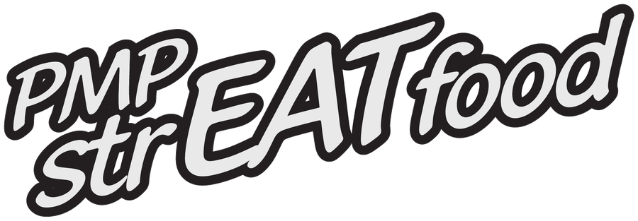

Simma · Cykla · Spring
Byathlon
Ett triathlon-evenemang med tre distanser — välj din utmaning!
25 juli 2026 · By badplats · Sidensjöveckan
Anmäl dig nuSimma · Cykla · Spring
Ett triathlon-evenemang med tre distanser — välj din utmaning!
25 juli 2026 · By badplats · Sidensjöveckan
Anmäl dig nuOm evenemanget
Byathlon är ett triathlon för alla nivåer, arrangerat av By intresseförening under Sidensjöveckan. Kortare, längre — eller en motionsklass utan simning. Välj din utmaning.
Hela överskottet från årets lopp går till civila i krigsdrabbade Ukraina.
Stiftelsen Filippus ↗Tre klasser — välj din utmaning
Utmana dig själv på riktigt
Simning
100 m
Cykel
26,6 km
Löpning
3,1 km
Totalt: 29,8 km
Perfekt för nybörjare
Simning
100 m
Cykel
10,6 km
Löpning
2,2 km
Totalt: 12,9 km
Avslappnat — för alla
Cykel
10,6 km
Löpning / Gång
600 m
Bastu & Bad
Dopp
Totalt: 11,2 km + bastu & bad
Från Sidensjöns vatten ut genom bygden
Lång distans — höjdprofil
Kort distans — höjdprofil
Två sträckor genom Sidensjöbygden
Lång löpning — höjdprofil
Kort löpning — höjdprofil
Praktisk information
Tidsschema
15:00
Samling & nummerlappar
15:45
Gemensam genomgång
16:00
Start — Lång
16:10
Start — Kort & Motion
~17:00
Foodtruck

Detaljer